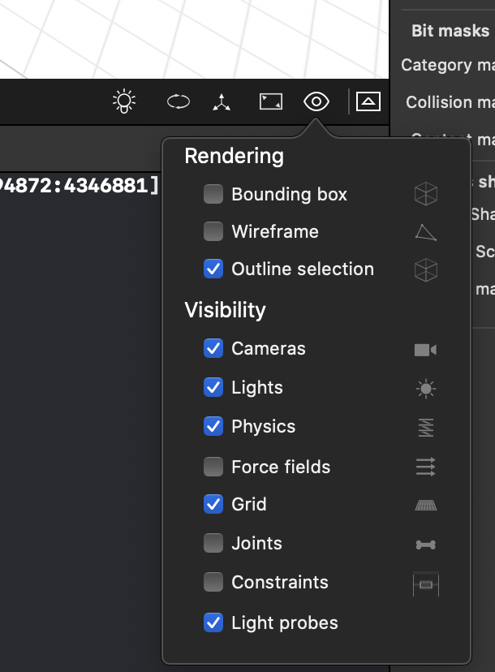

Enemigos
En este apartado vamos a añadir "peligros" al videojuego, e interactuar con ellos. Concretamente, estos peligros serán asteroides que deberemos evitar y destruir.
Generación de asteroides¶
Vamos a tener que generar un gran número de asteroides en la parte superior de la pantalla, en una posición X aleatoria, y haremos que vengan hacia nosotros. Dado que tendremos que generar múltiples asteroides "iguales", lo primero que haremos será crear un modelo general de "asteroide", y lo clonaremos cada vez que queramos que aparezca un nuevo asteroide.
TODO
C01
- En rock.scn tenemos un modelo 3D de asteroide creado, con nombre de nodo "asteroid".
- Vamos a cargar este modelo en nuestro código dentro del método
setupAsteroids(forView:).- Para ello podemos utilizar el siguiente código:
let asteroidScene = SCNScene(named: "art.scnassets/rock.scn") self.asteroidModel = asteroidScene?.rootNode .childNode(withName: "asteroid", recursively: false) view.prepare(self.asteroidModel!, shouldAbortBlock: nil)
¿Qué hace el método prepare? Consulta su documentación, y prueba a ejecutar el juego llamándolo y sin llamarlo. ¿Qué ocurre?
Una vez precargado el modelo de asteroide, se llamará al método spawnAsteroid(:) para clonar dicho modelo cada vez que queramos que aparezca (spawn) un asteroide nuevo (a la generación de objetos y personajes en determinados puntos de la escena se le denomina spawn).
TODO
C02
- En el método
spawnAsteroid(:), podemos generar un nuevo asteroide de la siguiente forma:if let asteroid = self.asteroidModel?.clone() { // Añadir a la escena e inicializar propiedades del clon }
- Dentro de dicho bloque de código deberemos:
- Añadir el asteroide como hijo a la escena (al mismo nodo raíz).
- Ubicarlo en la posición que nos llega como parámetro.
- Programar una acción que haga que se desplace hasta la parte inferior de los límites (
limits) en la misma coordenada X donde se ha generado.- Hacer que al mismo tiempo el asteroide rote sobre si mismo, sobre un eje de rotación aleatorio.
- Ayuda. Encontrarás en el proyecto (grupo Utils) una extensión de la clase
SCNVector3que te facilitará la generación de vectores aleatorios para el eje de giro.- Una vez llegue a la posición final, el asteroide deberá ser eliminado de la escena (programar esto mediente la acción adecuada).
Por último, nos queda utilizar el método anterior para generar asteroides en la escena . Haremos que se generen en la parte superior de la pantalla, en una coordenada X aleatoria, cada cierto intervalo de tiempo. Contamos con los campos spawnInterval y timeToSpawn para controlar la periodicidad de la generación de asteroides.
TODO
C03
- En
renderer(_:,updateAtTime:)descontamos el valor delta time detimeToSpawn.- Cuando
timeToSpawnllegue a 0, generamos un nuevo asteroide y reestablecemos el valor detimeToSpawnaspawnInterval.- El asteroide debe generarse en una posicion x aleatoria entre los limites de la escena (
limits.minXylimits.maxX), Y=0, y Z=limits.minY.- Ayuda. Encontrarás en el proyecto (grupo Utils) una extensión de la clase
Floatque te facilitará la generación de valores aleatorios.
Colisiones¶
Necesitamos calcular las colisiones producidas entre: - Asteroides y disparos - Asteroides y nuestra nave
Definiremos las categorías de cada cuerpo físico de la siguiente forma:
let categoryMaskShip = 0b001 // (1)
let categoryMaskShot = 0b010 // (2)
let categoryMaskAsteroid = 0b100 // (4)
TODO
C04
- Crea cuerpos físicos de tipo kinematic para la nave (
ship) dentro deship.scn, y para el asteroide (asteroid) dentro derock.scn, asignando la categoría correcta en cada caso. Puedes utilizar el panel de físicas del editor. Ambos deben tener forma física (Physics shape) esférica, ajustando la escala de la esfera al tamaño del modelo aproximadamente.Ayuda. En la parte inferior-derecha de la escena vemos el desplegable Display options, dentro del cual podemos activar la opción Visibility > Physics, que nos permitirá previsualizar la forma física de los objetos. Estos nos facilitará ajustar la forma física de forma correcta.

Recomendación: Es conveniente que la forma física para las colisiones sea algo inferior al tamaño visual de los objetos, ya que lo más frustrante para el jugador es que un asteoide "mate" a nuestra nave sólo con "rozarla".
TODO
C05
- En el método
shot, haz que las balas generadas tengan un cuerpo físico con las siguientes propiedades:- Tipo
kinematic- Forma esfera con radio
1.0- Máscara de categoría indicada anteriormente
- ¿Qué máscara de contacto deberían tener los asteroides en vista de las categorías de cada entidad? Asigna la máscara de contacto correcta en el nodo
asteroiddentro de rock.scn.
Por último, necesitaremos recibir una notificación de los eventos de contacto entre cuerpos, para saber cuándo debemos destruir un asteroide o la nave. Para ello deberemos implementar un delegado que reciba estas notificaciones.
TODO
C06
- Implementaremos el protocolo
SCNPhysicsContactDelegateen la claseTODO
C07
- Al final de
viewDidLoad, hacemos que nuestra clase (self) sea elcontactDelegatedel mundo físico de la escenaSCNScene.TODO
C08
- Implementamos el método
physicsWorld(:, didBegin:):func physicsWorld(_ world: SCNPhysicsWorld, didBegin contact: SCNPhysicsContact) { ... }
- Introduciremos el código que haga que cuando se detecte la colisión de un asteroide con la nave, se llame a
destroyShip(:,withAsteroid:), y que cuando se detecta una colisión entre una bala y un asteroide se llame adestroyAsteroid(:,withBullet:). A continuación se sugiere una forma de organizar el código para hacer esta comprobación:func onContact(asteroid: SCNNode, toNode node: SCNNode) { if(node.name == "ship") { destroyShip(ship: node, withAsteroid: asteroid) } else if(node.name == "bullet") { destroyAsteroid(asteroid: asteroid, withBullet: node) } } func physicsWorld(_ world: SCNPhysicsWorld, didBegin contact: SCNPhysicsContact) { if(contact.nodeA.name == "asteroid") { onContact(asteroid: contact.nodeA, toNode: contact.nodeB) } else if(contact.nodeB.name == "asteroid") { onContact(asteroid: contact.nodeB, toNode: contact.nodeA) } }
- Nota. El orden en el que pueden venir los nodos que participan en el contacto es arbitrario (
nodeAynodeB), por ello en el código anterior se han contemplado las dos posibilidades.
Una vez detectados los contactos, faltaría programar sus efectos:
TODO
C09
- En
destroyAsteroid(:,withBullet:)eliminamos tanto el nodo del asteroide como el de la bala de la escena (consulta el métodoremoveFromParentNode).TODO
C10
- En
destroyShip(:,withAsteroid:)eliminamos el asteroide de la escena, y haz que la nave salga despedida hacia atrás rotando (por ejemplo, que se desplace a(0, 50, 50)al mismo tiempo que rota6.3radianes, a lo largo de un segundo, utilizando las acciones adecuadas).
Efectos de partículas¶
Vamos a hacer que cuando un asteroide se destruya, se muestre un efecto de partículas como explosión. Contamos en el proyecto con el efecto Explode.scnp. Puedes previsualizar el efecto en el editor, y modificar sus propiedades de forma opcional. Haremos lo siguiente:
TODO
C11
- En
viewDidLoadcargamos el efecto de partículas utilizando la claseSCNParticleSystemy lo asignamos al campoexplode.TODO
C12
- En
showExplosion(onNode:)reproduciremos el efecto de partículaexplodeen la posición 3D donde estuviese el nodo que nos llegará por parámetro. Esto lo haremos con el métodoaddParticleSystemdeSCNScene.
Comprueba que al disparar sobre un asteroide se muestra la explosión.
Marcadores¶
Una forma sencilla de crear el HUD del juego (puntuación, vidas restantes, etc) es superponer sobre la vista una capa definida como escena de SpriteKit. Para ello simplemente deberemos asignar un objeto de tipo SKScene a la propiedad overlaySKScene de nuestro SCNSceneRenderer (en nuestro caso el renderer será la vista SCNView).
TODO
C13
- Configuraremos el HUD en
setupHUD(), siguiendo los pasos que se indican a continuación.- Creamos, de forma programática, un
SKSceneen blanco con las mismas dimensiones de nuestra vistaSCNView.- Creamos una etiqueta
SKLabelNode, inicialmente con la cadena "0 HITS", con las siguientes características:- Fuente University de tamaño 36 y color naranja (
UIColor.orange).- Hacemos que la etiqueta de texto se alinee verticalmente con su parte superior (consultar las propiedades de
SKLabelNodeen la documentación).- Situar la etiqueta en la parte superior de la pantalla, y centrada.
- Añade la etiqueta como nodo hijo al HUD (a la
SKScene).- Asigna la etiqueta a la propiedad
marcadorAsteroidesde la clase.- Asigna la escena a la propiedad
hudde la clase.- Tal como está configurado hasta ahora, ¿qué ocurre con los dispositivos iPhone de serie X? Utiliza la propiedad
safeAreaInsetsde la vista (en nuestro casoSCNView) para solucionar el problema.
Una vez contamos con el HUD y con un marcador de puntuación en él, nos queda incrementar la puntuación cada vez que destruimos un asteroide.
TODO
C14
- En
destroyAsteroid(:,withBullet:)incrementa el contador de asteroides destruidos de la clase (numAsteroides).- A continuación actualiza el marcador
marcadorAsteroidescon una cadena del tipo "X HITS", donde X será el número de asteroides que llevamos destruidos.
Comprueba que el marcador funciona correctamente.
Audio¶
Vamos ahora a incluir música de fondo y efectos de sonido en el videojuego.
Música de fondo¶
La música sonará continuamente en bucle. Contamos con un fichero MP3 en el proyecto que podemos utilizar como música. Para ello:
TODO
C15
- En
setupAudiocreamos un objetoSCNAudioSourceque lea el MP3, con su propiedadloopsactivada, y con un volumen de 0.1.- Ejecutaremos sobre el nodo raiz de la escena una acción de tipo
SCNAction.playAudioque reproduzca la fuente de audio anterior.
Con esto la música deberá sonar continuamente en bucle.
Efectos de sonido¶
A diferencia de la música de fondo, los efectos de sonido es importante que se reproduzcan de forma inmediata, sin producirse ningún retraso. Por ejemplo, debemos evitar ver una explosión y oirla 0.5 segundos después, pero la carga del sonido la primera vez producirá siempre un pequeño retardo. Por eso es importante hacer previamente una precarga de los sonidos en el videojuego. Haremos lo siguiente:
TODO
C16
- En
setupAudiocreamos unSCNAudioSourceconbomb.wavy con volumen 10.0, precargamos el sonido con su métodoload, y asignamos el sonido precargado a la propiedadsoundExplosion.TODO
C17
- En
showExplosionreproduciremos el sonidosoundExplosionsobre el nodo del asteroide que ha explotado.- Esto podemos hacerlo ejecutando una acción sobre el nodo correspondiente, pero debemos tener en cuenta que dicho nodo es eliminado de la escena justo en ese momento, por lo que la acción quedaría interrumpida. Solución propuesta:
- Crea un nodo vacío en la posición donde estaba el asteroide que va a explorar.
- Reproduce el sonido mediante una acción sobre dicho nodo
- Tras completarse la acción de reproducción de sonido, ejecuta una acción que elimine al nodo de su padre (utiliza el mecanismo adecuado para reproducir las dos acciones en secuencia).